Арт-мидраш · Библия и художник
ВСЕ СТАТЬИ о художнике Бецалеле | Веселеил - Исх. 31:2
Все опубликованные на сайте статьи о Бецалеле / синод.: Веселеил | Исх.35:2 / собраны на этой странице. Названный по имени Самим Творцом вселенной художник - израильтянин Бецалель, был призван для созидания святилища Богу Всевышнему в пустыне по исходе сынов Израилевых из Египта. По мере публикации новых материалов, они будут добавляться и на этой странице.
***
Статьи О ТАЙНЕ ИМЕНИ БЕЦАЛЕЛЯ и его послании
***
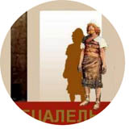
1. БЕЦАЛЕЛЬ | Призвание Параллельно с призванием сынов Левия для служения и священнодействия пред Творцом в святилище, в лице Бецалеля там же в пустыне Бог призывает в Израиле людей творчества. Каковы же требования, которые Он им предъявляет? | См. также видео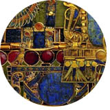
2. Бецалель | Под кровом БогаЕсли истолковать все имена, составляющие родословие первого израильского художника, призванного Богом для созидания святилища в пустыне, можно лучше понять – какого служения Творец ожидает от творческих людей. | См. также видео
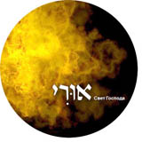
3. Свет Господень | БЕЦАЛЕЛЬВ этой фразе «Бецалель – сын Ури» (Исх.31:2) очень тонкая игра слов, если истолковать ивритские их значения. Имя отца Бецалеля проливает Свет на все его творчество. | См. также видео
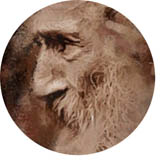
4. Хур | Посвященный ВсевышнемуХур в переводе с древнееврейского – ОЧИЩЕННЫЙ. Этим именем звался дед художника Бецалеля. И он оправдал свое имя, прошед через испытание, как испытывают золото. И его имя стало частью требования Творца к человеку, призванному Им для творчества. | См. также видео
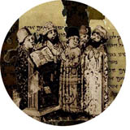
5. Хур | ПРИЗВАН ОЧИЩЕННЫМ | МидрашСтатья передает древние мидраши, которым, по крайней мере, две тыс. лет, т.к. их упоминает И.Флавий. Он повествует о верности Хура – главы династии художников, призванию Всевышнего. | См. также видео
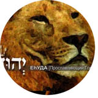
6. Йеhуда /Иуда/ | Провозглашающий славу ТворцаЙеhуда – уникальное имя, которое содержит в себе великое имя Бога и человеческое начало. | См. также видео
***
Статьи О ШКОЛЕ БЕЦАЛЕЛЯ / Веселеил | Исх.31:2 /
***
 7. Святилише — МИШКАН и МИКДАШ
7. Святилише — МИШКАН и МИКДАШ
Устроение Святилища Богу руками человека было условием пребывания Всевышнего посреди Своего народа, как написано: «И устроят они Мне святилище, и буду обитать посреди их» (Исх.25:8). | См. также видео
.
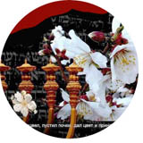
8. МЕНОРА — СИМВОЛ ШКОЛЫ БецалеляМенора – храмовый светильник, был знаком присутствия Всевышнего, бодрствующего над Своим словом. Это произведение Бецалеля как бы отражало в себе все святилище и выражало суть творчества художника пред Творцом. | См. также видео
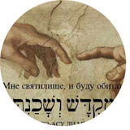
9. Школа Бецалеля | ПРИЗВАНИЕ УЧИТЬТора сообщает нам, что Бецалелю было не только поручено строительство святилища для Бога, но Творец дал ему также способность учить. Буквально написано: «И способность учить вложил в его сердце» (Исх.35:34). Чему именно учил Бецалель? | См. также видео
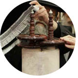
10. Художник Бецалель | Сердце учителяИстинный учитель не столько передает информацию, набор правил, текстов, законов, сколько учит жизни. В этом он уподобляется Богу, природа которого – отдавать, благословлять. Так и учитель. Он делится тем ценным, что составляет сущность его самого, раздавая самого себя. | См. также видео
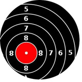
11. Прямое ПОПАДАНИЕ В ЦЕЛЬСлово учить имеет тот же корень, что и РОДИТЕЛЬ, и СТРЕЛОК. Слово ТОРА – того же корня. Что объединяет все эти слова? Каков их глубинный смысл? | См. также видео
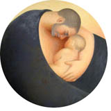
12. Школа Бецалеля | РОДИТЕЛЬФункция родителя – не только произвести на свет, но обеспечить беспомощного ребенка всем необходимым. И по мере его взросления заботиться о нем и учить всему, потребному для жизни. | См. также видео
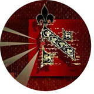
13. БЫЛИ РУКИ ЕГО — ВЕРА / Исх.17:12 /«Были руки его – вера» – таков точный перевод Писания (Исх.17:12). Таким образом верой Моше творил иную реальность, в которой побеждал в войне Израиль. На иврите слово ВЕРА имеет тот же корень, что и ИСКУССТВО. Размышляя над родственными связями этих слов, понимаем, что значит с точки зрения Библии ХУДОЖНИК. | См. также видео
ЕСЛИ ЭТОТ МАТЕРИАЛ БЫЛ ВАМ ПОЛЕЗЕН, ПОДЕЛИТЕСЬ ИМ С ДРУЗЬЯМИ